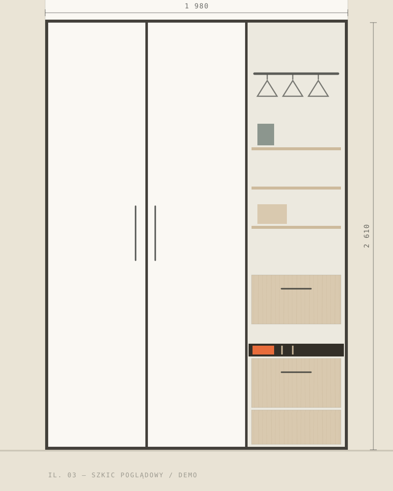
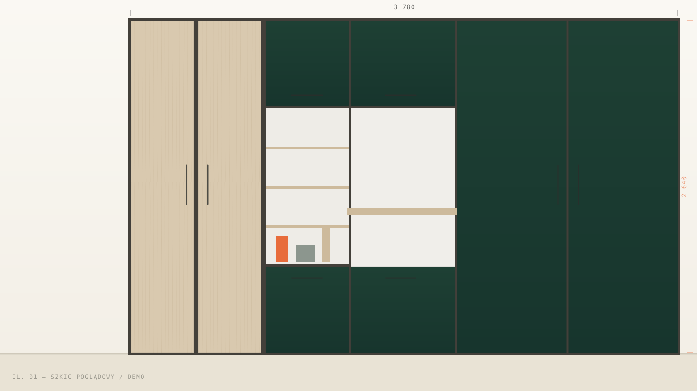
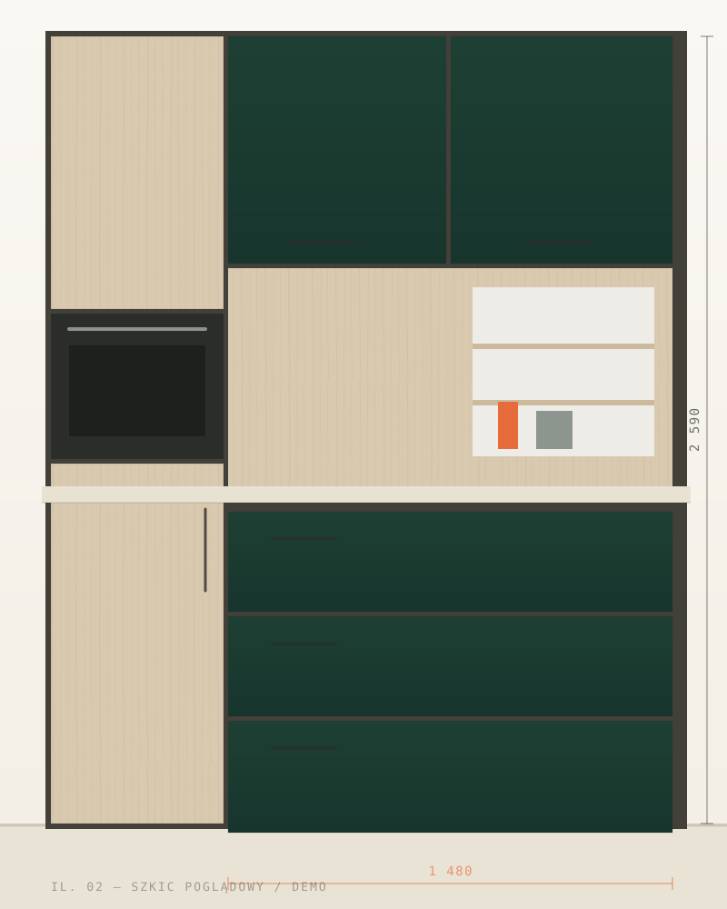
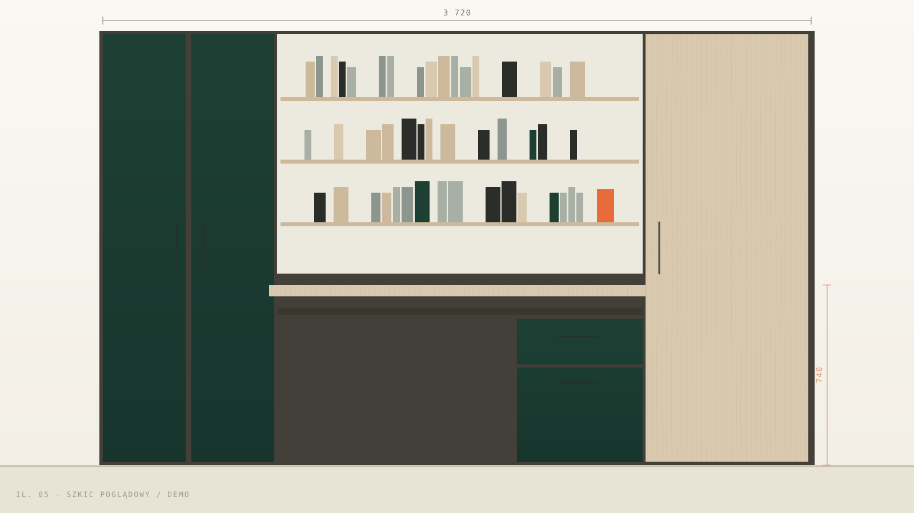
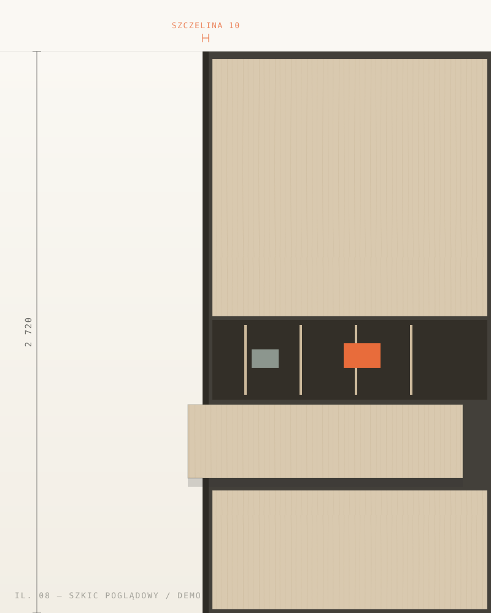

Meble na indywidualne zamówienie
Meble, które zaczynają się od Twojej przestrzeni.
Kuchnie, szafy, garderoby i zabudowy projektowane pod konkretny układ wnętrza, codzienne potrzeby oraz sposób, w jaki chcesz z niego korzystać.

Nie gotowy zestaw
Najpierw miejsce. Potem mebel, który naprawdę do niego pasuje.
Meble na wymiar nie zaczynają się od wyboru gotowego modelu. Zaczynają się od przestrzeni, jej wymiarów, ograniczeń i tego, co ma pomieścić.
Zabudowa może wykorzystać przestrzeń, która przy standardowych meblach pozostałaby niewykorzystana.
Układ szafek, blatu i przechowywania powinien wynikać z codziennych czynności, a nie tylko z wyglądu frontów.
Dobrze zaplanowane wnętrze szafy pozwala dopasować półki, drążki i szuflady do rzeczy, które faktycznie przechowujesz.
Typy przestrzeni
Jedna pracownia. Różne miejsca w domu i pracy.
01
Kuchnie
Zabudowy dopasowane do układu pomieszczenia, instalacji i codziennego sposobu korzystania z kuchni.
Zobacz zakres
02
Szafy i garderoby
Rozwiązania do wnęk, przedpokojów, sypialni i osobnych garderób. Pełna wysokość pomieszczenia zamiast martwych stref.
Zobacz zakres
03
Łazienki
Meble dostosowane do ograniczonego miejsca, wilgotnego środowiska i konkretnej ceramiki.
Zobacz zakres
04
Salon i sypialnia
Komody, zabudowy ścienne, półki i meble, które porządkują wnętrze bez przypadkowego efektu.
Zobacz zakres
05
Biuro i przestrzeń użytkowa
Meble do przechowywania, pracy i organizacji dokumentów w przestrzeni firmowej lub domowym gabinecie.
Zobacz zakres
Proces
Od pustej ściany do gotowej zabudowy.
-
Rozmowa
Opowiadasz, czego potrzebujesz, gdzie ma powstać zabudowa i jak chcesz z niej korzystać.
-
Pomiar
Dokładne wymiary pozwalają uwzględnić wnęki, skosy, instalacje i rzeczywisty układ pomieszczenia.
-
Układ
Ustalamy funkcję, podział oraz sposób przechowywania.
-
Materiały
Dobór wykończenia powinien odpowiadać zarówno wyglądowi wnętrza, jak i codziennemu użytkowaniu.
-
Wykonanie
Zabudowa powstaje według ustalonego układu i wymiarów.
-
Montaż
Ostatni etap to dopasowanie mebla do konkretnej przestrzeni.
Funkcja przed ozdobą
Dobry detal widać także po tym, jak działa.
Wygodne otwieranie, dostęp do przechowywanych rzeczy, wykorzystanie narożników i dopasowanie do instalacji mają znaczenie każdego dnia — nie tylko w chwili montażu.
Przechowywanie
Układ półek, szuflad i drążków można zaplanować pod rzeczy, które faktycznie mają się w zabudowie znaleźć — od wysokiego sprzętu po drobne akcesoria.
Dostęp
To, jak często czegoś używasz, powinno decydować o tym, gdzie się znajduje. Codzienne rzeczy pod ręką, sezonowe wyżej lub niżej.
Ergonomia
Wysokość blatu, kierunek otwierania frontów i podział stref pracy mają odpowiadać temu, kto z mebla korzysta na co dzień.
Wykorzystanie narożników
Narożnik nie musi być martwym polem. Odpowiedni podział szafek i dobrane okucia pozwalają sięgnąć w głąb zabudowy.
Dopasowanie do instalacji
Rury, liczniki, gniazda i rewizje można wkomponować w zabudowę tak, aby pozostały dostępne, ale nie rzucały się w oczy.

Portfolio jako system
Każda zabudowa odpowiada na inną przestrzeń.
Nie pokazujemy przypadkowej galerii. Każdy przykład to typ pomieszczenia, potrzeba i rozwiązanie przestrzenne.
Kontakt
Masz wnękę, pomieszczenie albo pomysł, który trudno dopasować do gotowych mebli?
Wyślij krótki opis przestrzeni. Na początek wystarczą jej przeznaczenie, lokalizacja i podstawowe oczekiwania.